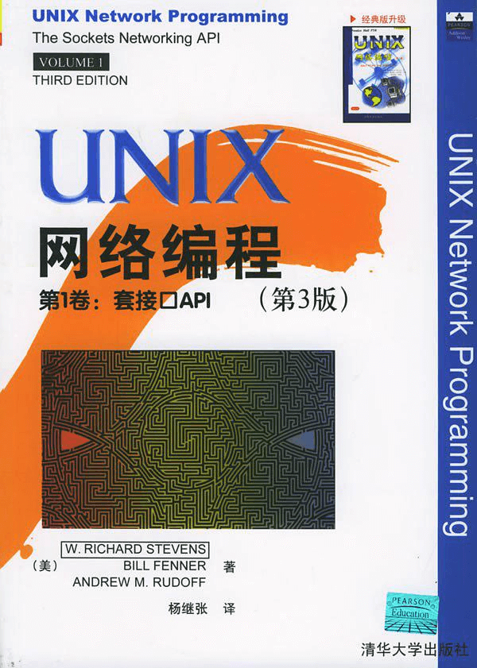

- 00 开篇词 别再让Linux性能问题成为你的绊脚石.md
- 01 如何学习Linux性能优化？.md
- 02 基础篇：到底应该怎么理解“平均负载”？.md
- 03 基础篇：经常说的 CPU 上下文切换是什么意思？（上）.md
- 04 基础篇：经常说的 CPU 上下文切换是什么意思？（下）.md
- 05 基础篇：某个应用的CPU使用率居然达到100%，我该怎么办？.md
- 06 案例篇：系统的 CPU 使用率很高，但为啥却找不到高 CPU 的应用？.md
- 07 案例篇：系统中出现大量不可中断进程和僵尸进程怎么办？（上）.md
- 08 案例篇：系统中出现大量不可中断进程和僵尸进程怎么办？（下）.md
- 09 基础篇：怎么理解Linux软中断？.md
- 10 案例篇：系统的软中断CPU使用率升高，我该怎么办？.md
- 11 套路篇：如何迅速分析出系统CPU的瓶颈在哪里？.md
- 12 套路篇：CPU 性能优化的几个思路.md
- 13 答疑（一）：无法模拟出 RES 中断的问题，怎么办？.md
- 14 答疑（二）：如何用perf工具分析Java程序？.md
- 15 基础篇：Linux内存是怎么工作的？.md
- 16 基础篇：怎么理解内存中的Buffer和Cache？.md
- 17 案例篇：如何利用系统缓存优化程序的运行效率？.md
- 18 案例篇：内存泄漏了，我该如何定位和处理？.md
- 19 案例篇：为什么系统的Swap变高了（上）.md
- 20 案例篇：为什么系统的Swap变高了？（下）.md
- 21 套路篇：如何“快准狠”找到系统内存的问题？.md
- 22 答疑（三）：文件系统与磁盘的区别是什么？.md
- 23 基础篇：Linux 文件系统是怎么工作的？.md
- 24 基础篇：Linux 磁盘I_O是怎么工作的（上）.md
- 25 基础篇：Linux 磁盘I_O是怎么工作的（下）.md
- 26 案例篇：如何找出狂打日志的“内鬼”？.md
- 27 案例篇：为什么我的磁盘I_O延迟很高？.md
- 28 案例篇：一个SQL查询要15秒，这是怎么回事？.md
- 29 案例篇：Redis响应严重延迟，如何解决？.md
- 30 套路篇：如何迅速分析出系统I_O的瓶颈在哪里？.md
- 31 套路篇：磁盘 I_O 性能优化的几个思路.md
- 32 答疑（四）：阻塞、非阻塞 I_O 与同步、异步 I_O 的区别和联系.md
- 33 关于 Linux 网络，你必须知道这些（上）.md
- 34 关于 Linux 网络，你必须知道这些（下）.md
- 35 基础篇：C10K 和 C1000K 回顾.md
- 36 套路篇：怎么评估系统的网络性能？.md
- 37 案例篇：DNS 解析时快时慢，我该怎么办？.md
- 38 案例篇：怎么使用 tcpdump 和 Wireshark 分析网络流量？.md
- 39 案例篇：怎么缓解 DDoS 攻击带来的性能下降问题？.md
- 40 案例篇：网络请求延迟变大了，我该怎么办？.md
- 41 案例篇：如何优化 NAT 性能？（上）.md
- 42 案例篇：如何优化 NAT 性能？（下）.md
- 43 套路篇：网络性能优化的几个思路（上）.md
- 44 套路篇：网络性能优化的几个思路（下）.md
- 45 答疑（五）：网络收发过程中，缓冲区位置在哪里？.md
- 46 案例篇：为什么应用容器化后，启动慢了很多？.md
- 47 案例篇：服务器总是时不时丢包，我该怎么办？（上）.md
- 48 案例篇：服务器总是时不时丢包，我该怎么办？（下）.md
- 49 案例篇：内核线程 CPU 利用率太高，我该怎么办？.md
- 50 案例篇：动态追踪怎么用？（上）.md
- 51 案例篇：动态追踪怎么用？（下）.md
- 52 案例篇：服务吞吐量下降很厉害，怎么分析？.md
- 53 套路篇：系统监控的综合思路.md
- 54 套路篇：应用监控的一般思路.md
- 55 套路篇：分析性能问题的一般步骤.md
- 56 套路篇：优化性能问题的一般方法.md
- 57 套路篇：Linux 性能工具速查.md
- 58 答疑（六）：容器冷启动如何性能分析？.md
- 加餐（一） 书单推荐：性能优化和Linux 系统原理.md
- 加餐（二） 书单推荐：网络原理和 Linux 内核实现.md
- 用户故事 “半路出家 ”，也要顺利拿下性能优化！.md
- 用户故事 运维和开发工程师们怎么说？.md
- 结束语 愿你攻克性能难关.md
加餐（二） 书单推荐：网络原理和 Linux 内核实现
你好，我是倪朋飞。欢迎来到 Linux 性能优化专栏的加餐时间。
上一期的专栏加餐，我给你推荐了一些 Linux 入门、体系结构、内核原理再到性能优化的书籍。这里再简单强调一下，主要包括下面这几本。
Linux基础入门书籍：《鸟哥的Linux私房菜》
计算机体系结构书籍：《深入理解计算机系统》
Linux编程书籍：《Linux程序设计》和《UNIX环境高级编程》
Linux内核书籍：《深入Linux内核架构》
性能优化书籍：《性能之巅：洞悉系统、企业与云计算》
你可以通过学习这些书，进一步深入到系统内部，掌握系统的内部原理。这样，再结合我们专栏中的性能优化方法，你就可以更清楚地理解性能瓶颈的根源，以及性能优化的思路。
根据前面几个模块的学习，你应该也感觉到了，网络知识，要比 CPU、内存和磁盘等更为复杂；想解决相应的性能问题，也需要更多的基础知识来支撑。
而且，任何一个高性能系统，都是多台计算机通过网络组成的集群系统。网络性能，在大多数情况下，自然也就成了影响整个集群性能的核心因素。
今天，我就来给你推荐一些，关于网络的原理，以及 Linux 内核实现的书籍。
计算机网络经典教材《计算机网络（第5版）》
既然想优化网络的性能，那么，第一步当然还是要熟悉网络本身。所以，今天我推荐的第一本书，就是一本国内外广泛使用的经典教材——《计算机网络（第5版）》。
这本书按照网络协议模型，自下而上地介绍了计算机网络的基本原理。其中，涵盖范围广是其最大的特点，内容包括了物理层、数据链路层、访问控制层、网络层、传输层和应用层等，是理解计算机网络工作原理的重要参考书。
网络协议必读书籍《TCP/IP详解 卷1：协议》
掌握了计算机网络的基本原理后，接下来就要深入了解，TCP/IP 协议族中各个协议的原理。在这一点上，《TCP/IP详解 卷1：协议》，是当之无愧的圣经级书籍。
这本书按照 TCP/IP 协议族，也是自下而上介绍了各种协议的原理，并且还穿插了大量的实例，帮你更透彻地理解相关知识。我们分析网络性能时经常碰见的那些协议，这本书都有讲解，比如 ARP、ICMP、路由、TCP、UDP、NAT、DNS 等等。
无论是想学习掌握，各种网络协议的工作原理；还是更直接落实在工作上，分析优化复杂环境中的网络性能问题，这本书都是你必不可少的宝典。
Wireshark 书籍《Wireshark网络分析就这么简单》和《Wireshark网络分析的艺术》

在学习网络协议时，最大的难点，就是这些协议初学比较抽象，要理解它们的原理也比较困难。这时，如果可以借助 Wireshark 提供的图形界面，你就可以更直观形象地认识这些协议。
《Wireshark网络分析就这么简单》和《Wireshark网络分析的艺术》，就是两本不错的讲解 Wireshark 使用方法的书籍。这两本书通过诙谐风趣的案例，由浅入深地带你使用 Wireshark，来分析常见的网络问题。
正如我所说，通俗易懂是其最大特点，相对前面两本大部头来说，你读起来会轻松很多。这两本书在内容上有些重合，内容范围也并不算丰富，但作为入门书籍，却实实在在可以带你，更轻松地理解常见网络问题的分析方法。
网络编程书籍《UNIX网络编程》

熟悉了协议后，那么接下来自然就是要看，怎么使用这些网络协议，来开发各式各样的应用程序，也就是网络编程。在 Linux 中，我们需要通过套接字接口，跟网络协议栈交互。所以，这里我推荐的是一本介绍套接字接口的书籍——《UNIX网络编程》。
这本书为你详细介绍了，各种套接字 API 的使用方法，还包含了大量可以直接运行的实例。如果你是一个想实现高性能网络的开发者，这本书是很不错的参考。
《UNIX网络编程》主要介绍了套接字接口的使用方法，但并不包括 Linux 内核网络协议栈的实现方法。不过没关系，网络协议栈相关内容，我们上一期加餐推荐过的《深入Linux内核架构》中，就已经包括了，所以你不需要再借助其他内核书籍。
最后，我还是想补充一句，读书不在多，而在于精。哪怕只是啃下我推荐的这几本，你能获得的，一定是质的飞跃。
今天推荐的这些书里，你可能会觉得有些书很难，还觉得有些知识过时了。但你要知道，核心的网络原理基本没有太大变化，总是不过时的。并且网络本身，也是现代互联网和各种高可用、可扩展架构的基石。多花点儿时间坚持学和练，效果一定显而易见。
同时，在进入最后的实战进阶篇前的这几天，我也希望你能抽出时间，来复习或者补全专栏前面的知识。虽然总有人自我调侃，说技术类的东西，学了不一定会用，但是反过来说，不去学，一定不会用。坚持下去，相信在专栏结课时，我们一起，一定能看到一个更好的你。
行动起来吧！
© 2019 - 2023 Liangliang Lee. Powered by gin and hexo-theme-book.